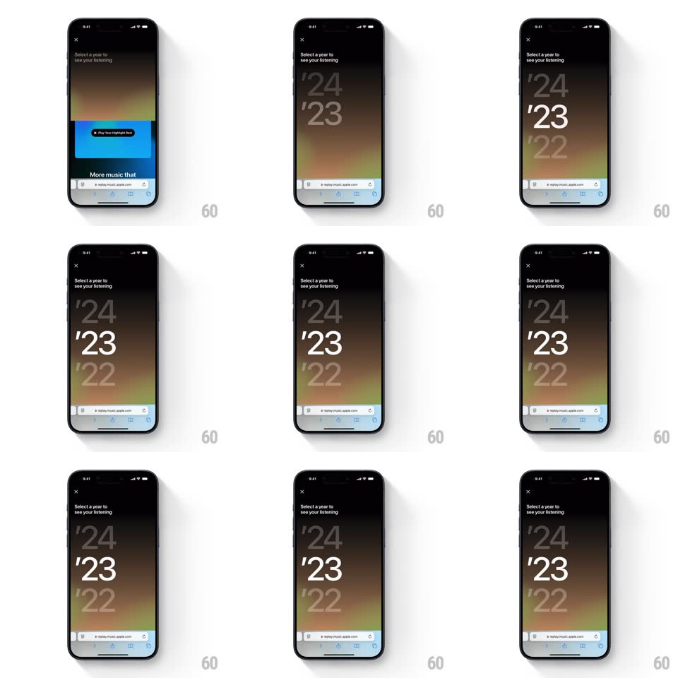

Media
Frame-by-frame

Rebuild this interaction 1:1: Apple Music Replay's year picker - from the Replay intro card, the view transitions to a year-selection menu where giant typographic years ('24, '23, '22) stack vertically over a soft aurora gradient, with the focused year at full opacity and the others ghosted.

Rebuild this interaction 1:1: Apple Music Replay's year picker - from the Replay intro card, the view transitions to a year-selection menu where giant typographic years ('24, '23, '22) stack vertically over a soft aurora gradient, with the focused year at full opacity and the others ghosted.
## Integration
Integration: stack-agnostic spec - springs given as stiffness/damping, timed motions as duration + curve; map every value to your framework and animation library of choice.
## Scene
A Safari web view (replay.music.apple.com). Intro: blue-green gradient card with "Replay your year in music." and a Play Your Highlight Reel button. Menu state: an X close button top-left, "Select a year to see your listening" header, and the huge year list filling the screen over a warm aurora gradient (blue, orange, green fields).
## Motion spec
Pattern: view transition + staggered oversized type reveal.
- The intro card slides down and fades (translateY +60px, opacity -> 0, 250ms, ease-in) as the aurora gradient blooms behind it (scale 1.1 -> 1, opacity 0 -> 1, 400ms).
- The header ("Select a year...") fades in first (200ms), then the years stagger in from below: each year slides up (translateY 40px -> 0, 350ms, ease-out) with 80ms between them, '24 first, then '23, then '22.
- Year type is enormous (roughly a third of the viewport height per row) with an apostrophe prefix; the current/default year sits at 100% opacity, the others at ~30%.
- Scrolling the list shifts the opacity hierarchy: the centered year eases to full opacity (250ms) as its neighbors fade back.
- Tap a year: it pulses (scale 1 -> 1.03 -> 1, 200ms) before the view transitions on.
## Calibration
- The gradient drifts very slowly (hue shift over ~10s) - alive, but sub-perceptual.
- Opacity does the hierarchy work - no size change between focused and ghosted years.
## Reduced motion
Years appear without stagger; gradient static.
## Don't miss
- The years use an apostrophe abbreviation ('24, not 2024) set at poster scale.
- The ghosted years stay readable - 30% opacity, never below.